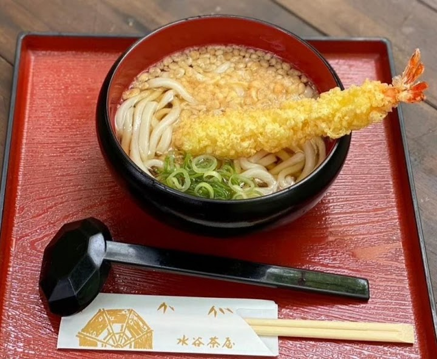
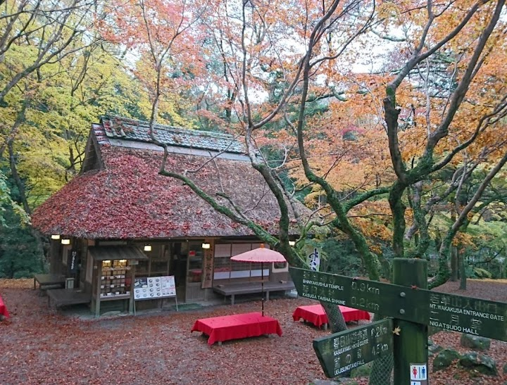
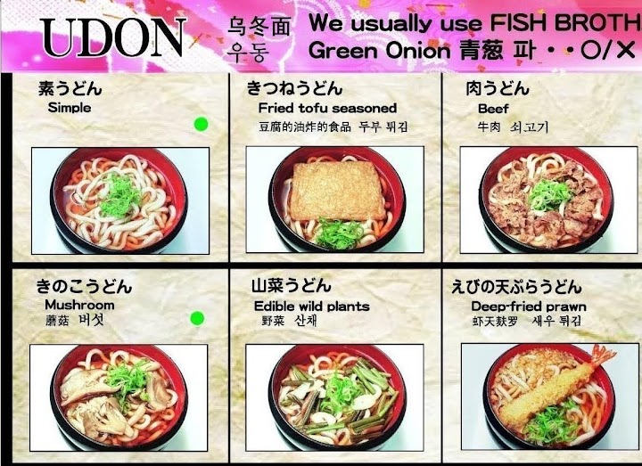
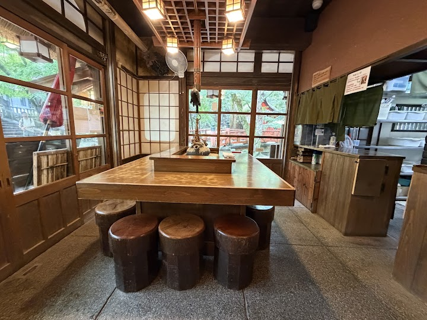
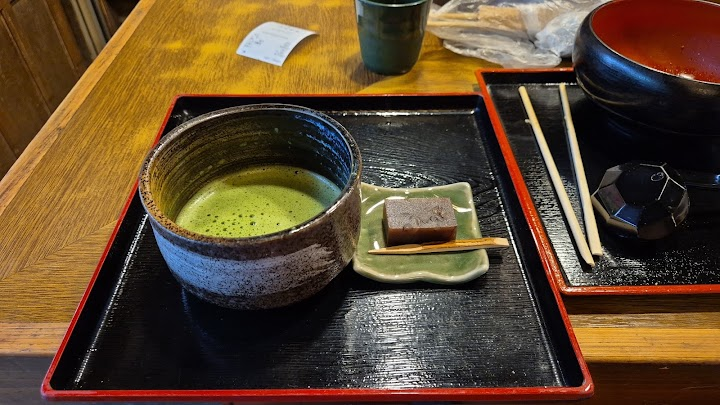

Mizuya Chaya
Mizuya Chaya is a traditional teahouse in the park serving light meals, tea and sweets, a good place to stop for lunch on the walk. It gets packed and has a wait; Google lists it as open 11:00 to 15:30 on Thursdays, so go before it closes.
Open in Google Maps (street view, more photos and reviews there)






Visitor tips on finding it and getting there
This noodle shop is situated at the end of your spiritual journey from Kasuga Taisha Shrine walking along Nara Park towards a small walkway bridge over a flowing creek. This serene place serves savory udon / soba noodles, snacks, and sweets like their delicious matcha ice cream or shaved ice along with several selection of teas. Cold water and hot green tea are free on a dispenser. Itadakimasu. OISHIIDES. What’s great is that their ambiance brings you back in time to side road food restaurants in the Edo era (like the ones you see in the old samurai movies, K-Dramas, or C-Dramas of ancient ti